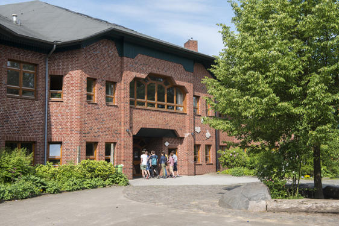

Verein zur Förderung der Waldorfpädagogik Elmshorn e.V.
Vereinszweck
Aufgabe des Vereins ist die Förderung der Erziehung und Bildung durch die Beschaffung von Mitteln zur materiellen Unterstützung eines freien öffentlichen Schulwesens auf der Grundlage der Pädagogik Rudolf Steiners, insbesondere des Schulvereins der Freien Waldorfschule Elmshorn e.V., soweit es sich nicht um Pflichtaufgaben des Schulträgers handelt.
Der Satzungszweck wird verwirklicht insbesondere durch die Durchführung öffentlicher Veranstaltungen und die Unterhaltung dafür geeigneter Räumlichkeiten, die Errichtung und Vermietung eigener Gebäude, die Herausgabe und den Vertrieb von Publikationen sowie durch Zuwendungen zu Klassenfahrten.

Es ist ein großes Glück,
wenn wir den Hindernissen,
aus denen wir lernen können,
möglichst früh begegnen.
Kontakt
Verein zur Förderung der Waldorfpädagogik Elmshorn e.V.
Adenauerdamm 2a
25337 Elmshorn
E-Mail: post@foerderverein-fwse.de
Vorstand
- Bettina Bonow
- Gil Caseiro – caseiro@foerderverein-fwse.de
- Susanne Luley – luley@foerderverein-fwse.de
- Johannes Slomka – slomka@foerderverein-fwse.de